To what extent has Africa progressed toward the aspirations of Agenda 2063, and what priorities should guide implementation during the decade ahead?
More than a decade after the adoption of Agenda 2063, Africa's principal challenge is no longer the articulation of a continental vision. The challenge is ensuring that institutions, financing mechanisms, and governance systems can translate that vision into measurable and inclusive transformation over the next decade.
More than a decade after its adoption, Agenda 2063 remains Africa's most comprehensive framework for long-term transformation. Its first decade built real foundations: national plans aligned to the continental vision, regular monitoring, and the African Continental Free Trade Area (AfCFTA), signed by 54 states. Growth has been resilient, at an estimated 4.4% in 2025.
Delivery, however, trails ambition. Aggregate scores for the first plan range from 32% to 51% depending on the report. Manufacturing is about 10.6% of GDP; external debt service absorbed 31% of government revenue in 2024; only 28% of children in sub-Saharan Africa complete upper secondary school; and 42% of Africans use the Internet, against 76% worldwide. Governance has improved in 30 countries but security, rights and participation have deteriorated.
As Africa enters the Second Ten-Year Implementation Plan (2024–2033), the priority is delivery: AfCFTA and regional value chains, industrialization, domestic resource mobilization, accountable institutions, human capital, climate resilience, digital transformation, and a stronger collective voice in global governance.
1. Introduction: Why 2063 Matters
Agenda 2063 is Africa's strategic framework for inclusive growth, sustainable development, regional integration and global engagement. It grew out of the 2013 Solemn Declaration marking the fiftieth anniversary of the Organization of African Unity (OAU) and was formally adopted by the African Union Assembly in January 2015. Organised around seven aspirations and 20 goals, it describes “The Africa We Want” and is delivered through five successive ten-year plans.
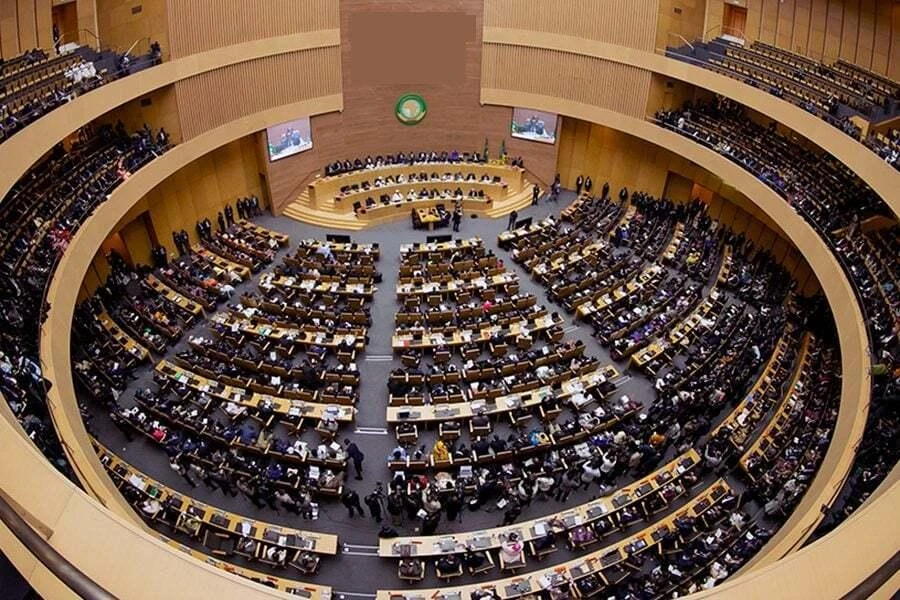
The first plan (2014–2023) has ended and the Second Ten-Year Implementation Plan (2024–2033), the “Decade of Acceleration”, is under way. Gains are visible in regional integration, institutional coordination and policy alignment, yet outcomes remain uneven across countries and sectors. Structural transformation, financing, governance, human capital, climate vulnerability and insecurity continue to hold progress back.
This brief assesses progress and sets priorities for the decade ahead, drawing on African Union (AU) implementation reports and recent data from the African Development Bank (AfDB), the United Nations, the International Telecommunication Union (ITU), the Mo Ibrahim Foundation, the OECD and Afreximbank. A mid-course assessment is timely for three reasons. The first plan has closed and its lessons are fresh. Several authoritative datasets were refreshed in 2026, including the African Economic Outlook, the Ibrahim Index of African Governance and ITU connectivity data. And the financing environment has tightened, with debt pressure, aid cuts and energy-price shocks from conflict in the Middle East. The central question is no longer whether the vision is right, but whether institutions, resources and governance systems can deliver it.
2. Looking Back: The Origins and Ambitions of Agenda 2063
Agenda 2063 emerged from a recognition that Africa needed a long-term, homegrown framework. It consolidated earlier efforts, including the Lagos Plan of Action (1980) and the 2002 Strategic Vision, and followed wide consultation with citizens, governments, civil society, youth, women, the private sector and the diaspora. It sought to build on the gains of political liberation while addressing persistent development constraints.
The framework rests on seven aspirations: a prosperous Africa based on inclusive growth and sustainable development; an integrated continent united under Pan-African ideals; good governance, democracy and respect for human rights; a peaceful and secure Africa; a strong cultural identity; people-driven development that harnesses women and youth; and a strong, united and influential global player. Together they form the normative foundation of the continent's long-term strategy.

Implementation follows five ten-year plans. The First Ten-Year Implementation Plan, endorsed in June 2015, focused on convergence: establishing institutions, aligning national plans with continental priorities, strengthening monitoring and advancing flagship projects. The second continental report tracked 15 such projects. Among them were the AfCFTA, the Single African Air Transport Market, the Integrated High-Speed Rail Network, the African Passport and free movement, the Grand Inga hydropower project and the Pan-African e-Network.
Monitoring was a notable achievement. Continental reports followed in 2020 and 2022, and the AU now conducts biennial reviews with public dashboards. The first decade also exposed the scale of the delivery challenge: persistent financing gaps, governance constraints, limited productive transformation, climate vulnerability and uneven implementation. In February 2024 the AU launched the second plan, built around seven “moonshots” and a target GDP per capita of $3,048 for each member state. The foundations are laid; the test is whether they can carry the weight.
3. Taking Stock: Where Africa Stands Today
The evidence points to meaningful institutional progress but uneven developmental outcomes. The six subsections below take the main dimensions in turn.
3.1 Institutionalizing Agenda 2063
Domestication has advanced, but measurement is inconsistent. The first continental report (2020) scored implementation at 32% across 31 reporting states; the second (2022) scored 51% across 38. An independent tracker of AU decisions records that the end-of-plan assessment presented in 2024 yielded 39% in the report to the Assembly and 58% in a separate evaluation deck, reflecting different indicator sets. Country performance varies widely: only five countries reached 60% or more of first-decade goals (Rwanda, Ethiopia, Senegal, Zimbabwe and Togo), while 11 scored 30% or less. Data gaps make outcomes hard to measure. A single, harmonised scorecard is a precondition for accountability.
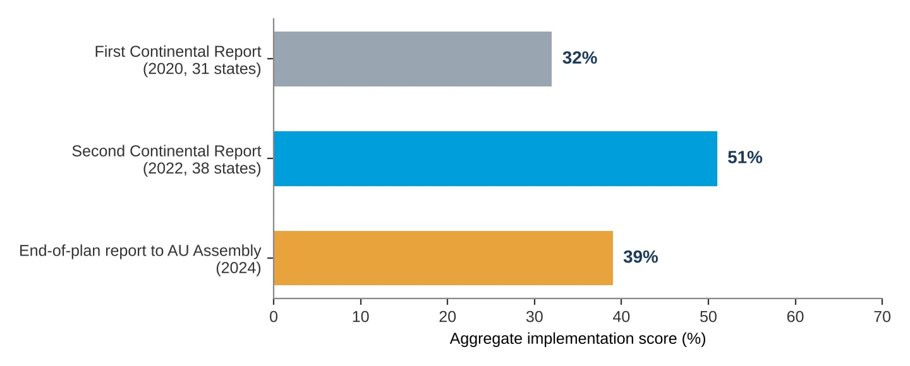
3.2 Progress in Regional Integration
The AfCFTA became operational in 2021, and 54 states have signed, with its secretariat running in Accra. Intra-African trade rose 5.5% to an estimated $213.8 billion in 2025, and manufactured and semi-processed goods are taking a larger share. Even so, intra-African trade is only about 15% to 18% of the continent's total trade, depending on the measure, and Africa's share of global trade is just 3.1%. Connectivity is improving, with the AfDB having financed 18,000 km of a planned 56,000 km highway system and visa liberalisation advancing in Ghana and Rwanda. Tariff schedules, rules of origin and non-tariff barriers remain the binding constraints.
3.3 Economic Transformation and Industrialization
Growth has been resilient. The AfDB estimates real GDP growth rose from 3.5% in 2024 to 4.4% in 2025, with 22 economies above 5%, and projects 4.2% in 2026. Africa had 12 of the world's 20 fastest-growing economies in 2025. Yet per-capita growth was only 1.9%, and the AfDB argues that growth of at least 7% a year is needed to create jobs at scale (Figure 2).
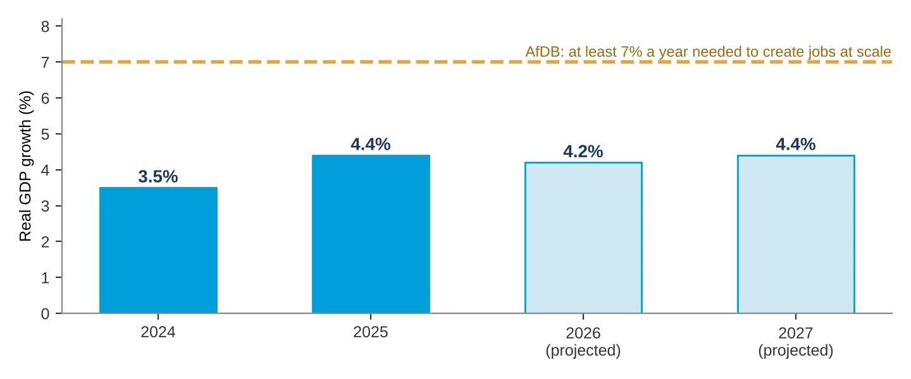
Structural change is slower. Manufacturing has stagnated at about 10.6% of GDP (10.7% in 2015), and Africa holds about 2% of global manufacturing value added against roughly 3% of world GDP and 18.6% of world population (UN DESA). Manufacturing value added reportedly rose from $285 billion in 2020 to $351 billion in 2025, a gain, but not a change of structure.
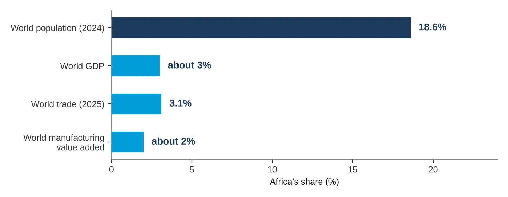
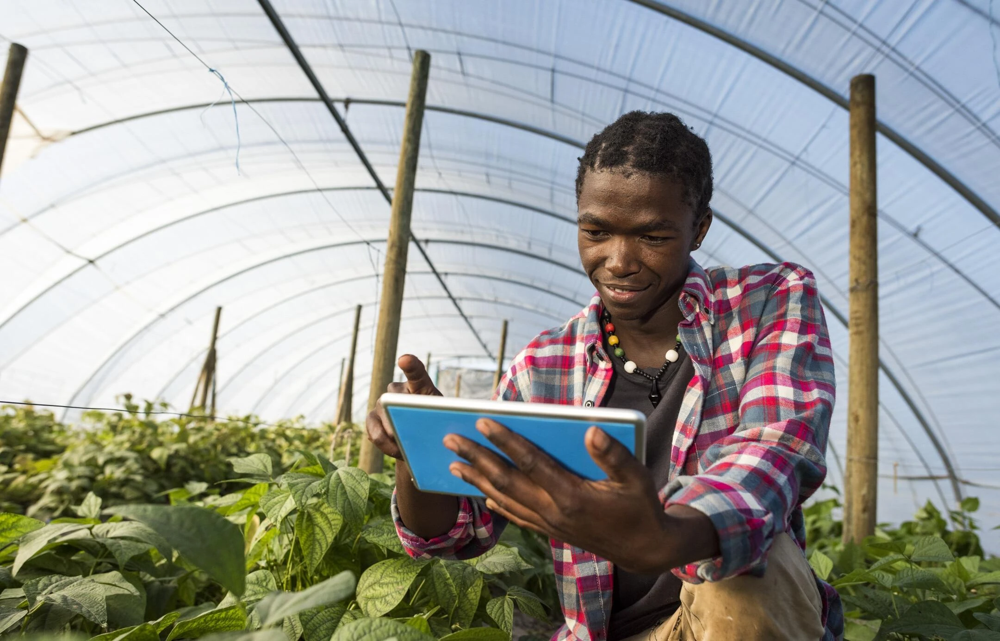
3.4 Governance, Peace and Security
The 2026 Ibrahim Index of African Governance (covering 2016–2025) finds 30 countries, home to half of Africa's population, with better overall governance than in 2016, largely through improved economic opportunity and human development. Twenty-three countries deteriorated. Security, human rights and participation declined steeply, and seven of the ten biggest decliners experienced at least one coup. The continental average score is 50.1 out of 100.
Insecurity is the clearest drag on aspiration four. An AU official estimates 20 to 30 active conflicts across 55 member states, and “Silencing the Guns” has suffered serious setbacks. In 2025, 18 of the 24 Chapter VII resolutions adopted by the UN Security Council concerned Africa.
3.5 Human Capital Development
Access has widened but quality and completion lag. In sub-Saharan Africa 68% of children complete primary school, 47% lower secondary and 28% upper secondary, and 30–40% of teachers lack minimum qualifications. Nearly nine in ten children struggle to read by age 10, while up to 12 million young Africans enter the job market each year. With 60% of Africans under 25, the demographic dividend depends on skills and jobs. Connectivity is a related gap: 42% of Africans use the Internet, the lowest of any region.
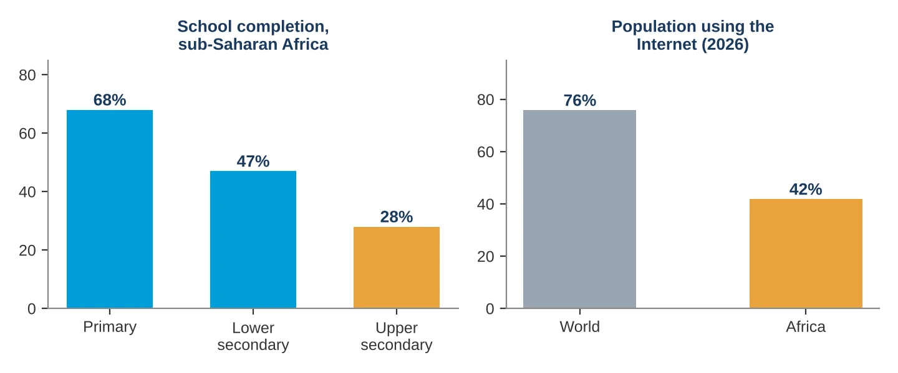
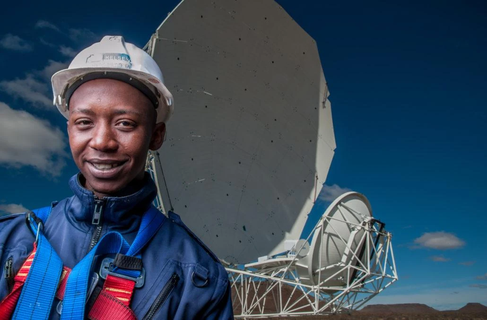
3.6 Emerging Risks and Constraints
Financing is the binding constraint. The AfDB estimates an annual development financing gap of about $1.3 trillion. Public debt stands at 62% of GDP, but the burden lies in servicing: external debt service rose from 23.7% of government revenue in 2017 to 31% in 2024, and 25 of 51 countries spent more on interest than on health in 2021–2023. Domestic mobilisation is limited: the average tax-to-GDP ratio was 16.1% in 2023, against 33.9% in the OECD, and illicit flows are estimated at $88.6 billion a year.
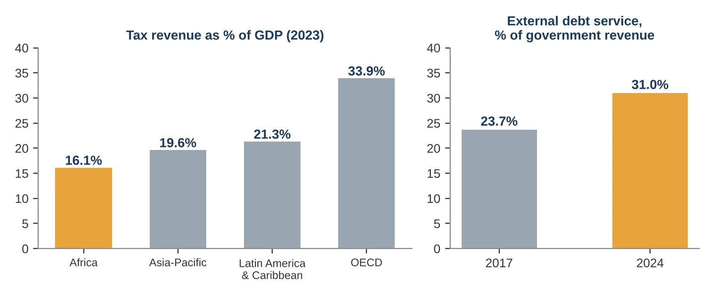
Climate shocks add to the strain. The World Meteorological Organization reports that African countries lose 2–5% of GDP and divert up to 9% of budgets to climate extremes, with adaptation in sub-Saharan Africa costing an estimated $30–50 billion a year, even though the continent emits less than 10% of greenhouse gases. Global uncertainty compounds this: the AfDB projects inflation of 10.4% in 2026 and warns that conflict in the Middle East is raising energy and import costs.
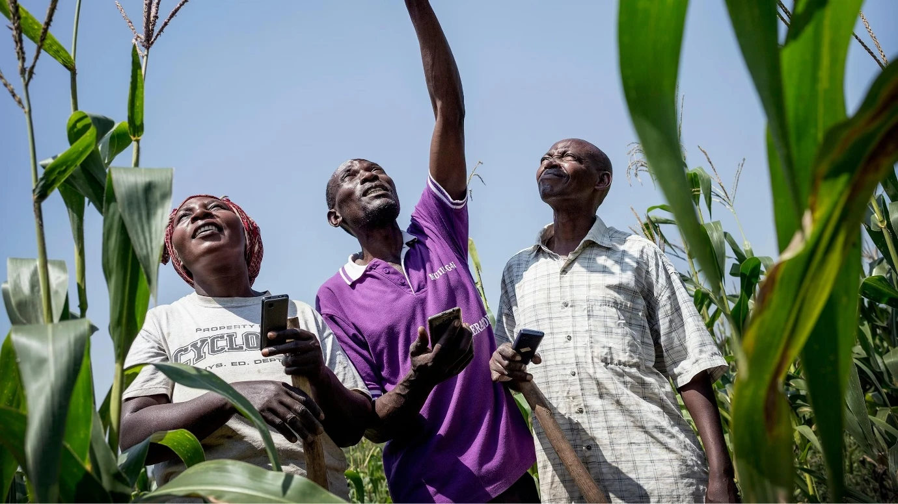
4. Priorities for the Decade Ahead
The second plan marks a transition from agenda-setting to accelerated implementation. Eight priorities follow from the evidence above.
4.1 Accelerating AfCFTA and Regional Value Chains
The treaty architecture is largely in place; the task is to make it operate. Priorities are rules of origin, customs modernisation, digital trade, and removal of non-tariff barriers, supported by trade finance, since SMEs face limited access to finance. Raising intra-African trade beyond 15–18% of the total is the clearest indicator of success.
4.2 Advancing Industrialization and Economic Diversification
Many economies remain dependent on primary commodities, exposing them to shocks. Value addition in agro-processing, energy and selected green manufacturing offers the most credible route to moving manufacturing above its decade-long plateau near 10.6% of GDP. Industrial parks, skills and affordable power should be sequenced together.
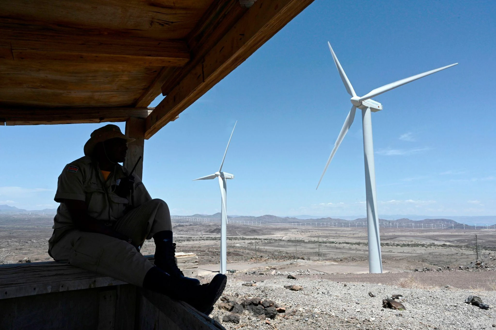
4.3 Strengthening Domestic Resource Mobilization
With a $1.3 trillion annual gap and aid under pressure, Africa must rely more on itself. Tax-to-GDP ratios have risen for three consecutive years, yet 20 of 38 countries remain below 15%. Improved tax administration, action on illicit flows, deeper capital markets and diaspora instruments should be combined with debt management that restores fiscal space.
4.4 Building Effective and Accountable Institutions
Strong institutions are the channel through which every other priority is delivered. Administrative capacity, transparency, audit and monitoring systems need strengthening, and a single harmonised scorecard should end the divergence in reported progress. Constitutionalism and accountability for breaches of the AU Constitutive Act are part of this agenda.
4.5 Investing in Human Capital and Youth
Foundational learning, teacher quality and technical skills must come first, since completion rates fall sharply beyond primary school. Policy should link training to labour demand so that the 12 million annual entrants find productive work, with particular attention to young women.
4.6 Advancing Climate Resilience and Green Growth
Adaptation should be built into planning and budgets, backed by early-warning systems and climate-smart agriculture. Renewable energy and green industries can serve resilience and industrial strategy at once, but affordable climate finance is essential when debt service is already consuming a growing share of revenue.
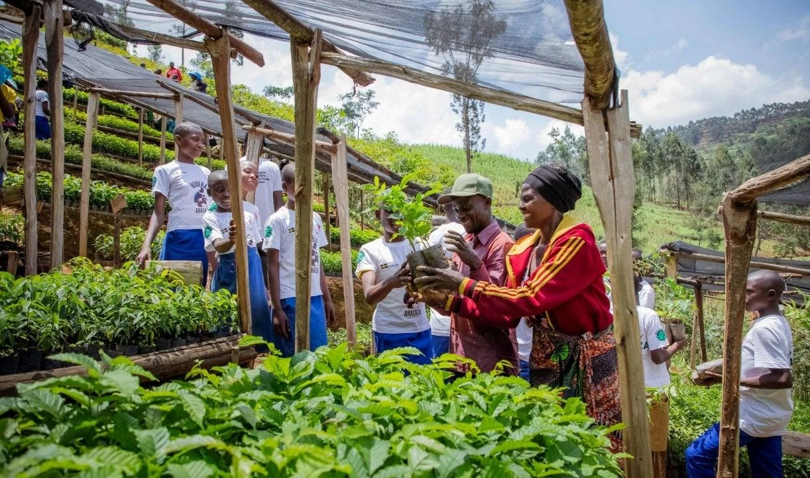
4.7 Harnessing Digital Transformation
Connectivity at 42% against a global 76% limits digital trade, e-government and skills. Closing the gap requires affordable access, rural coverage and digital literacy, together with interoperable payment and data frameworks that support AfCFTA trade.
4.8 Strengthening Africa's Voice in Global Governance
Africa's agenda depends on rules written elsewhere: debt architecture, climate finance, trade and security. Its voice is weakest where decisions are most binding. Africa has 54 UN Member States but no permanent Security Council seat, even though most of the Council's Chapter VII business concerns the continent. The African Common Position seeks two permanent and five non-permanent seats, and the 2024 Pact for the Future commits States to redress the historical injustice against Africa as a priority. Pressing this alongside debt and climate-finance reform is part of delivering Agenda 2063.
5. Policy Recommendations
Delivery will depend on clear responsibility. The following recommendations are the authors' proposals and are addressed to key stakeholders.
1. African Union Commission
- Publish one harmonised, annual Agenda 2063 scorecard that reconciles the 32%, 51%, 39% and 58% figures, and institutionalise biennial continental reporting for the second plan.
- Align Agenda 2063 targets with national plans and regional frameworks, and facilitate peer learning on industrialization, governance reform and climate resilience.
- Lead a coordinated African position on debt, climate finance and Security Council reform.
2. Member States
- Align budgets and public investment with the second plan, and aim to lift tax-to-GDP ratios in the 20 countries below 15%.
- Strengthen public sector capacity, audit and service delivery; publish national Agenda 2063 results.
- Prioritise industrialization, value addition and productive jobs for youth and women, and invest in foundational learning and skills.
3. Regional Economic Communities (RECs)
- Accelerate cross-border infrastructure and trade facilitation, and harmonise regulations to support regional value chains.
- Use the AfCFTA non-tariff barrier reporting tools, and coordinate regional and continental initiatives.
4. Development Finance Institutions (DFIs)
- Expand financing for infrastructure, energy, industry and adaptation, and scale up intra-African trade finance for SMEs.
- Back innovative instruments, including risk-sharing and diaspora bonds, and strengthen project preparation and monitoring support.
5. Private Sector and Development Partners
- Invest in manufacturing, technology and green industries, and build regional value chains through public-private partnerships.
- Support debt-relief reform and affordable climate finance, and treat Africa's call for permanent Security Council representation as part of a more legitimate multilateral system.
6. Conclusion: From Vision to Delivery
Agenda 2063 remains the continent's most ambitious framework. Its first decade showed that Africa can build consensus, strengthen institutions, advance integration and align plans across levels of governance. Yet progress is uneven: scores differ by report, manufacturing has stalled near 10.6% of GDP, debt service is crowding out spending, completion rates fall away after primary school, and security has worsened in much of the continent.
The central challenge is therefore implementation, not ambition. Meeting it requires stronger institutions, sustained political commitment, more domestic and external investment, and tighter coordination from continental to local level. The decade ahead will be decisive. Success will be measured not by the strength of aspirations but by tangible gains in prosperity, inclusion, resilience and opportunity for African citizens. Turning vision into results must be the defining priority on the road to 2063.
References and data sources
- African Union and AUDA-NEPAD, Agenda 2063 portal.
- African Union, Second Ten-Year Implementation Plan 2024–2033, February 2024.
- African Union, First Continental Report on the Implementation of Agenda 2063, 2020.
- AUDA-NEPAD, 2nd Continental Report on the Implementation of Agenda 2063, 2022.
- AU Decisions Monitoring, STYIP baseline tracker (independent compilation).
- Mo Ibrahim Foundation, Assessing progress against the UN's SDGs and AU's Agenda 2063, 2025; and 2026 Ibrahim Index of African Governance.
- Africa Center for Strategic Studies, Progress on Agenda 2063: interview with an AU Commission official, 2025.
- African Development Bank (AfDB), African Economic Outlook 2026, May 2026; Macroeconomic Performance and Outlook 2026, March 2026; and Regional Economic Outlook 2026 (West Africa).
- Afreximbank, African Trade Report 2026.
- UNECA / UNIDO, Industrial Statistics Yearbook 2023: Africa.
- UN DESA, World Population Prospects 2024.
- UN Statistics Division, SDG Report 2026, Goal 4: Quality education.
- World Bank, Education in Eastern and Southern Africa.
- ITU, Facts and Figures 2026: Internet use, October 2026.
- OECD/AUC/ATAF, Revenue Statistics in Africa 2025 and STATAFRIC release.
- Devex, Between aid cuts and debt crises, Africa bets on its own tax systems (illicit flows estimate).
- World Meteorological Organization (WMO), Africa faces disproportionate burden from climate change and adaptation costs, 2024.
- Al Jazeera, UNGA81: Why has Africa's Security Council reform push remained unresolved?, 26 September 2026.
- UN General Assembly, A/59/L.67 (African Common Position); Pact for the Future, Action 39(a).
Notes on data: Figures were checked against the sources above as of 26 November 2026. Where sources disagree (for example the share of intra-African trade, or first-plan scores) the range is reported rather than a single value.